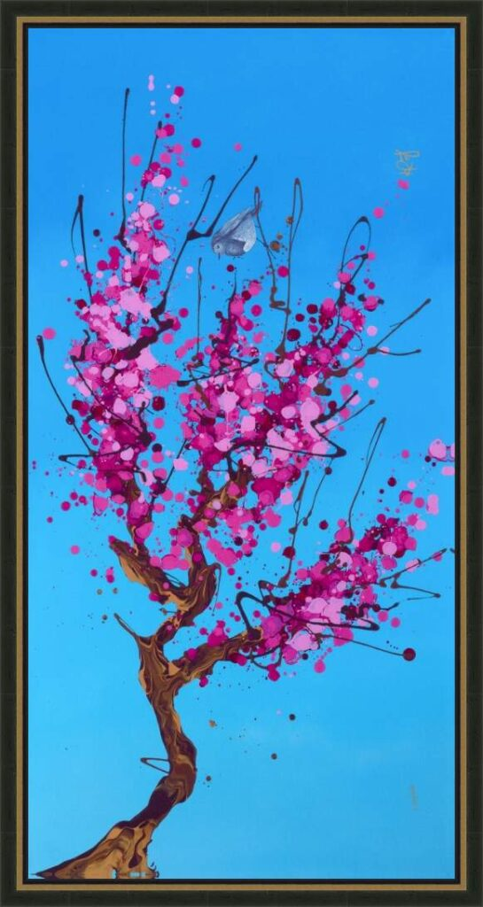

Untitled
by Kre8

Description:
In this vibrant untitled work, Kevin “Kre8” Vigil applies his signature “Kre8tizm” style to the timeless beauty of nature, reimagining a traditional cherry blossom tree through the lens of urban abstract art.
The composition is set against a stark, electric blue background that serves as a modern, graphic sky. Rising from the bottom is a twisted, fluid tree trunk that branches out into delicate, spindly lines resembling thrown ink. The “blossoms” are rendered as an explosion of magenta, pink, and violet splatters—a chaotic yet controlled burst of color that captures the fleeting energy of spring.
Perched quietly amidst this abstract storm is a small, realistic grey bird. This solitary figure acts as the calm within the chaos, grounding the piece and adding a touch of narrative to the abstraction. It is a perfect fusion of street art aesthetics and organic serenity.
Artwork Details:
- Medium: Giclée on Canvas with Hand Embellishment / Mixed Media (Archives may vary)
- Style: Abstract Surrealism / Urban Pop / “Kre8tizm”
- Key Elements: Electric blue background, pink splatter “sakura” blossoms, solitary grey bird, fluid tree trunk
- Signature: Hand-signed by the artist
- Dimensions
- 16 in x 32 in
- Reg. / Lot No.
- 971037.0100